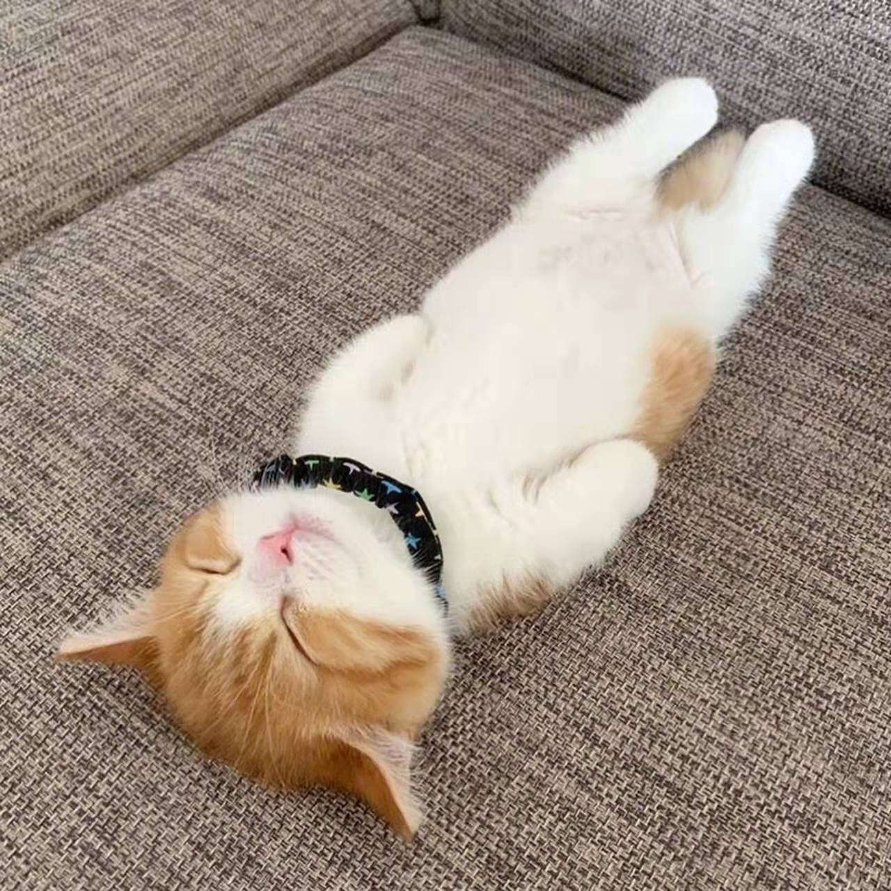

弃燕雀之小志，慕鸿鹄以高翔”———————南朝 丘迟《与陈伯之书》
大家好,我叫果立鸿,外号果粒橙,来自格物书院,24届高一学生。我是一个善良、热情、勇敢、正直、积极、乐观的男孩，平时经常唱歌，爱好吟诵。初中时曾代表 北大附中（划重点）参加“第六届全国中学生朗诵大会”（全国特别权威的比赛，当时举办的很隆重，参赛学生来自中国各地），参赛作品《咏长江》得到评委们的好评，同时我在朗诵中加入了我的特色吟诵，成为了全场的焦点。在体育特长方面，我擅长游泳（学校没有游泳馆，有点可惜）。初中时我是学校“自然之翼”社团昆虫组的成员，跟随团队来到过海南鹦哥岭、陕西秦岭考察，有丰富的野外求生经验；我很喜欢观察昆虫，我可以从中锻炼观察力，培养耐心。
感谢各位大佬的观看 衷心致谢subIT技术课的老师们同学们